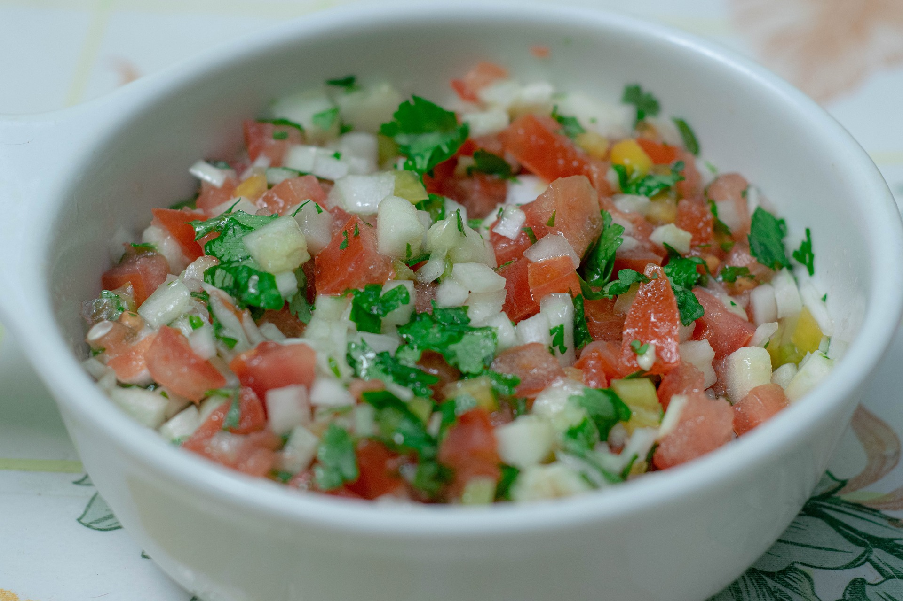

Pebre

Descripción
Pebre chileno, la mejor salsa que probaras en tu vida!
Ingredientes
- 1 ½ taza de tomates picados en cubos pequeños
- 1 cebolla picada
- 2 cucharadas de cilantro picado
- 2 aji verde picado
- ½ taza de aceite de oliva
- jugo de limón
- 1 diente de ajo
- pimienta
- sal
Preparación
- Mezclar todos los ingredientes
- Agregar sal y pimienta a gusto
- Dejar reposar por 1 hora (a lo menos)
Home